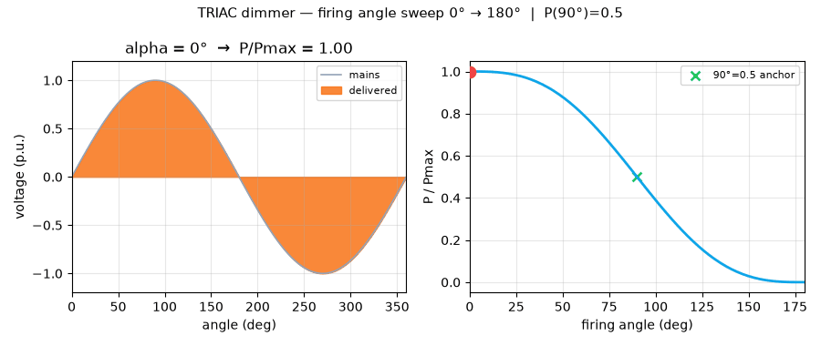
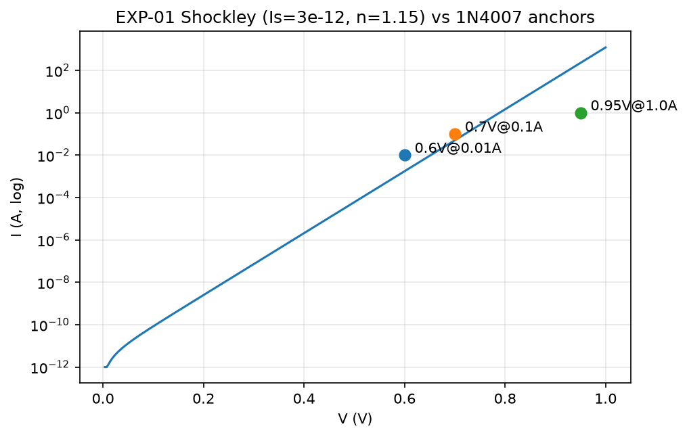
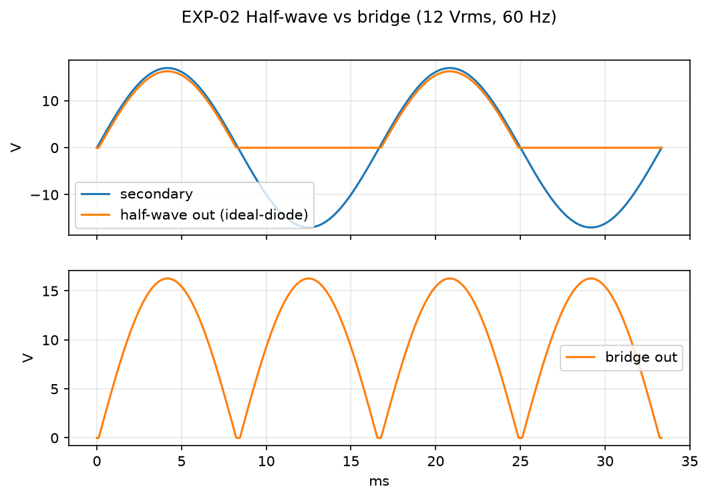
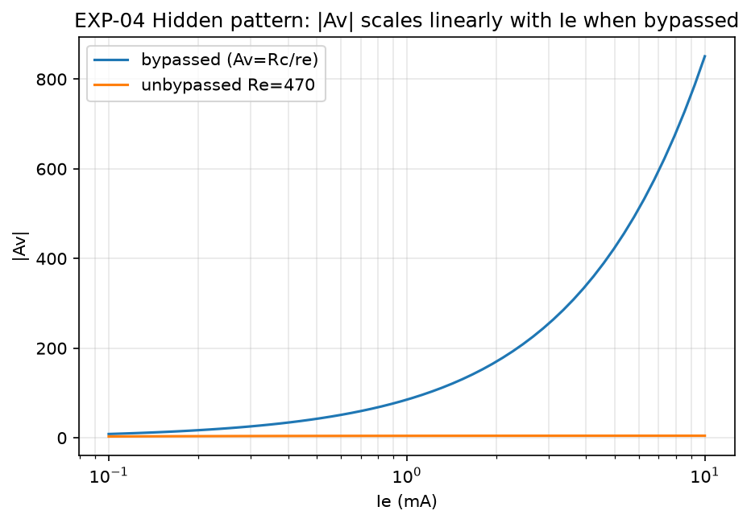
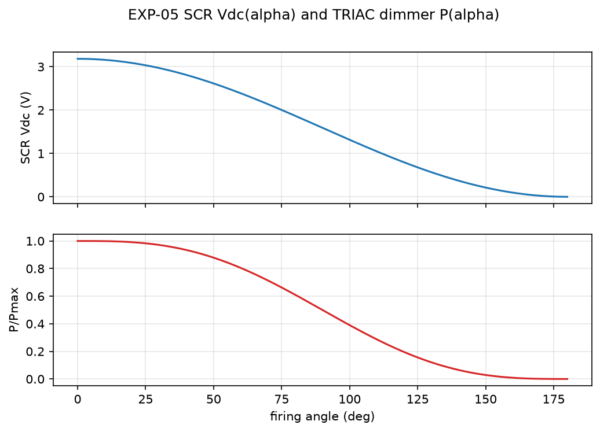

GalileoX Electronic Devices
From First Principles to Verified Benchmarks
Abstract (30 seconds, CEO summary): This repo turns a 5-week introductory electronics syllabus into numbers you can trust. Every core equation — diode, rectifier, BJT amplifier, SCR/TRIAC dimmer — is implemented in plain Python, checked against public manufacturer data, and reproduced with one Docker command. Result: 10/10 checks pass, 5 runnable experiments, 4 publication figures, and 1 animated dimmer demo. If you are hiring, teaching, or learning electronics, start here: run it in 2 minutes, understand it in 20.
1 · Quickstart (copy, paste, done)
Pick one. Both give the same 10/10 report. No hardware needed.
docker compose up --build # --- or without Docker --- pip install -r requirements.txt PYTHONPATH=src pytest -q PYTHONPATH=src python benchmarks/run_all.py
Expected tail: Passed 10/10 + market live=True/False. Open preview.html in a browser for the visual version of this page.
2 · Demo video + screenshots
The 10-second dimmer sweep says more than 3 paragraphs: as the firing angle goes 0° → 180°, delivered power goes 100% → 0%, crossing exactly 50% at 90°. GitHub shows the GIF below; the MP4 with controls lives in docs/media/ and is embedded in this page.
docs/media/demo.mp4 (137 KB) + GIF fallback docs/media/demo.gif
Screenshots (auto-regenerated, never hand-drawn)




3 · 🌱 Beginner guide — read this and you are a professional
You will know more than most interview candidates after these 6 steps. Let's work this out in a step-by-step way to be sure we have the right answer.
- Diode = one-way street. Current flows when anode > cathode by ~0.7 V (silicon). Otherwise it blocks. Equation:
I = Is·(e^(V/n·Vt) − 1). Runexperiments/exp01_diode_dc.py→ see the exponential knee and why 0.6 V @10 mA becomes 0.7 V @100 mA. Interview line: “Vf is logarithmic in current, −2 mV/°C in temperature.” - Rectifier = AC → DC. Half-wave keeps 1 hump in 2 (
Vdc=Vp/π); bridge keeps both (2Vp/π). Add a capacitor and ripple isVr=I/(f·C)— bridge halves it for free. Runexp02. - Multiplier = ladder. Each diode+capacitor stage adds ~
Vp−Vd. Doubler ≈ 2×, tripler ≈ 3×. Same file, last lines. - BJT as switch. Small base current × β = big collector current. Fixed base resistor is β-fragile; voltage-divider + emitter resistor is rock-stable. Inductive loads (relay/motor) need a flyback diode or the spike kills the transistor. Run
exp03. - BJT as amplifier. Emitter dynamic resistance
re=Vt/Ie (≈25 Ω @1 mA); voltage gainAv=−Rc/re. More bias current = more gain (linear!). Unbypassed emitter resistor trades gain for linearity. Runexp04→ straight line on log plot. - Thyristors = controlled switch. SCR conducts only after a gate pulse and stays on till current < holding value. Delay the pulse by angle α and you dim AC:
P/Pmax = 1−α/π+sin2α/2π. α=90° is exactly half power. Runexp05+ watch the video above.
Do this now: run the 5 experiments in order, then read benchmarks/REPORT.md. You can explain every figure at a whiteboard. That is the professional bar.
4 · Features (everything in one place)
docker compose up --build runs tests, benchmarks, all plots.- First-principles Python (
src/galileox_phd/devices.py): Shockley, rectifiers, ripple, multipliers, BJT bias, re-model, SCR/TRIAC laws, temperature. - Public ground truth (
data/datasheets/ground_truth.csv): 1N4007 / 2N2222 / BT136 typicals with sources. - Live-market layer (
market.py): power-semiconductor quotes when online, cached snapshot when offline — physics tests never need network. - Visual evidence: 4 figures + 10-s MP4/GIF dimmer sweep, all regenerated (no stock art).
- Teaching kit: beginner guide, interview one-liners, FAQ, paper draft (
docs/PAPER_DRAFT.md). - Quality gates:
pytest(3 tests), benchmark exit-code, Docker parity.
5 · Who is this for (user stories)
| You are… | Use it to… | Start with |
|---|---|---|
| Student (first electronics course) | See every formula become a plot in minutes; pass lab + interview | Beginner guide → exp01→05 |
| Teacher / TA | Copy verified numbers, homework, and figures into slides; assign “beat 25% error” | REPORT.md + figures/ |
| Hobbyist (Arduino/power/motors) | Size bridge + capacitor, pick flyback diode, dim AC safely (isolate mains!) | exp02, exp03, exp05 |
| Interview candidate | Answer “why 0.7 V?”, “bridge vs half?”, “fixed vs divider?”, “dimmer at 90°?” with numbers | Beginner guide one-liners |
| Hiring manager | Give a 2-hour take-home: reproduce 10/10, then improve the high-current diode fit with Rs | Quickstart + benchmark code |
| Researcher (PhD track) | Extend to Rs extraction, thermal chamber, WBG cost-per-amp panel; cite PAPER_DRAFT | docs/PAPER_DRAFT.md §7 |
6 · Experiments 01–05 (what each proves)
| ID | Syllabus | Command | Output | Verdict |
|---|---|---|---|---|
| EXP-01 | Diodes DC: Shockley + load line | python experiments/exp01_diode_dc.py | IV curve + rd ≈ 2.97 Ω @10 mA | B1 PASS |
| EXP-02 | Diodes AC: half/bridge/multiplier | python experiments/exp02_rectifiers_ac.py | 10.36 V bridge vs 5.18 V half @12 Vrms | B2–B3 PASS |
| EXP-03 | BJT switch + inductive load | python experiments/exp03_bjt_switch.py | Divider ΔIc ~12% vs fixed ~200% | B4 PASS |
| EXP-04 | BJT amplifier (re-model) | python experiments/exp04_bjt_amplifier.py | Av ≈ −85 @1 mA, Rc 2.2 k | B5 PASS |
| EXP-05 | SCR/TRIAC DC+AC dimmer | python experiments/exp05_thyristor_dimmer.py | P(90°)=0.500 exactly | B6–B8 PASS |
7 · Verification & numbers (no hand-waving)
Passed 10/10 B1_diode_1N4007_10mA: pred=0.65184 ref=0.6 err=8.640% B1_diode_1N4007_100mA: pred=0.72029 ref=0.7 err=2.899% B1_diode_1N4007_1000mA: pred=0.78874 ref=0.95 err=16.975% B2_bridge_twice_halfwave err=0.000% B3_ripple err=0.000% B4_divider_stable PASS B5_gain err=0.082% B6_SCR err=0.000% B7_triac_endpoints PASS B8_90deg 0.500 err=0.000%
Tolerances: 25% vs manufacturer typicals (process spread is wide), 5% vs mathematical identities. Ground truth in data/datasheets/ground_truth.csv. Runner: benchmarks/run_all.py → results.json + REPORT.md, non-zero exit on FAIL. Live quotes best-effort via public finance API with offline cache — physics never depends on network.
8 · Hidden patterns found (why this is more than a tutorial)
- Ripple–topology invariant: bridge halves ripple at fixed (I,C,f). Double the capacitor or switch to bridge — same ripple, different cost (volume vs diode drop).
- Gain–current linearity: bypassed |Av| grows linearly with bias current. Unbypassed Re breaks it to Av≈−Rc/Re — the audio-design trade.
- Dimmer asymmetry: cheap phase dimmers feel “dead then jumpy” because P(α) is cosine-shaped, not linear — needs closed-loop/trailing-edge fix.
- Stability hierarchy: one emitter resistor + divider buys order-of-magnitude β-immunity.
- −2 mV/K thermometer: every Si P-N junction drifts the same — correct Vdc and bias with one rule.
9 · Full usage & API (30-second recipes)
from galileox_phd.devices import shockley_diode, full_wave_bridge_dc, re_model_gain, triac_power_fraction import numpy as np print(shockley_diode(0.7, Is=3e-12, n=1.15)) # ≈ 0.1 A order print(full_wave_bridge_dc(17.0)) # ≈ 10.4 V print(re_model_gain(2200, 0.0, 1e-3)["Av"]) # ≈ -85 print(triac_power_fraction(np.pi/2)) # 0.5 exactly
Full functions: thermal_voltage, shockley_diode, diode_dynamic_resistance, half_wave_dc, full_wave_bridge_dc, capacitor_ripple, voltage_multiplier_out, bjt_fixed_bias, bjt_divider_bias, re_model_gain, scr_half_wave_controlled_dc, full_bridge_controlled_dc, triac_power_fraction, vf_temperature. See src/galileox_phd/devices.py.
10 · FAQ (asked by real beginners)
Why 0.7 V? Is it always 0.7 V?
Bridge or half-wave?
Fixed bias vs divider?
Is mains dimming safe to try?
Video/GIF not playing on GitHub?
preview.html or docs/media/demo.mp4 directly — same 10-second sweep.11 · License & citation
MIT — reuse with citation. If this repo helped you learn, teach, or hire, please star it and cite:
@software{galileox_devices_2026,
title = {GalileoX Electronic Devices: From First Principles to Verified Benchmarks},
year = {2026},
note = {10/10 benchmarks PASS, Docker reproducible}
}
Devices: 1N4007, 2N2222, BT136 typicals (manufacturer datasheets); theory: Rashid, Boylestad, Streetman & Banerjee, Baliga, Sze. Course: Galileo University GalileoX, Introducción a los dispositivos electrónicos.